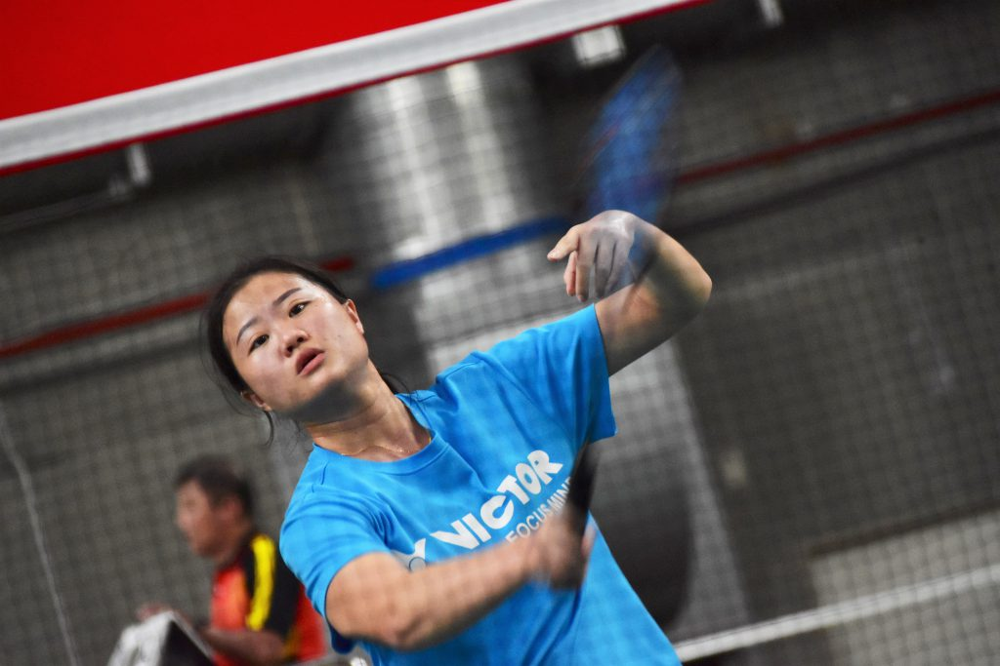
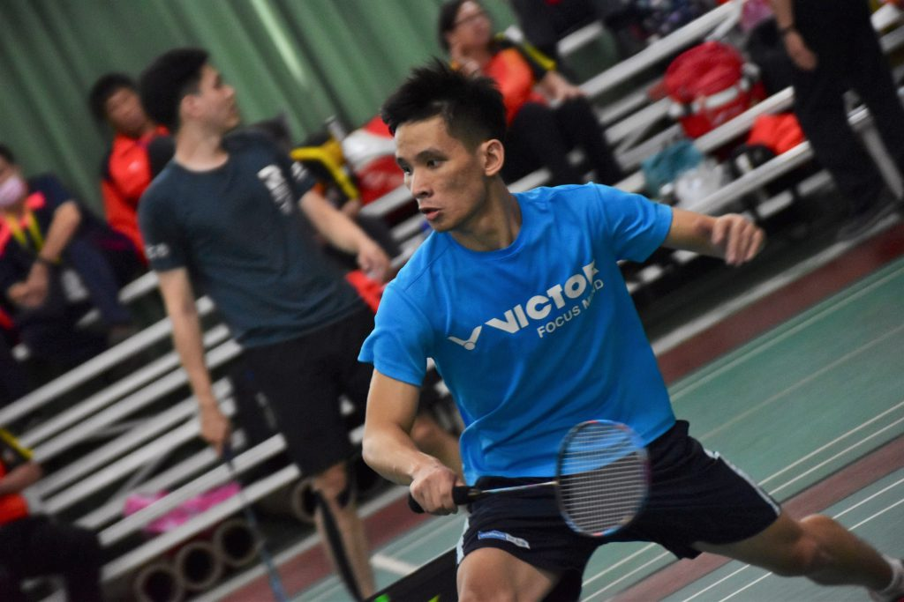
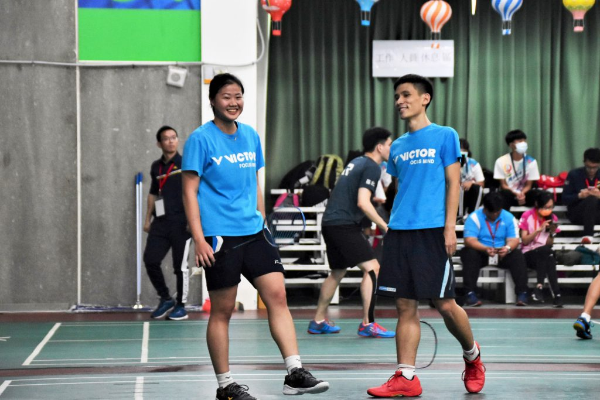
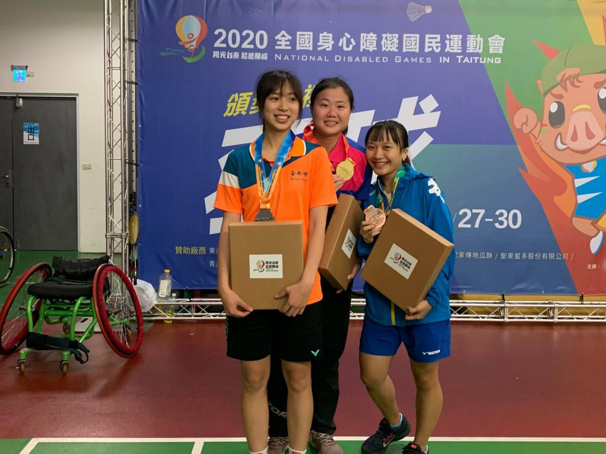
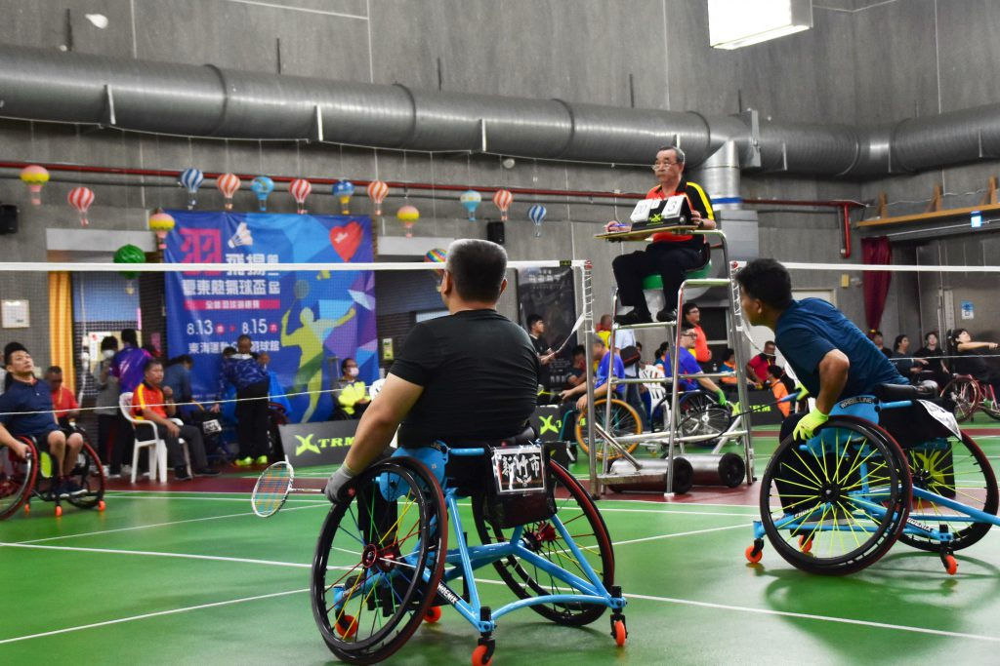

【記者吳冠伶台東報導】羽球場上不停響起「啪！啪！」的擊球聲，選手們一來一回在空中揮拍、跑跳。同一時間，場下觀眾的掌聲、歡呼不絕於耳。然而，無論是場上或場下的聲響，都不足以干擾選手們對球的專注，因為，這是場屬於聽障選手的比賽。
兩年一度的「全國身心障礙國民運動會（以下簡稱全障運）」11月27日至30日於台東縣登場。聽障羽球世界女子排名第一、國立體育大學的沈彥汝不負眾望，以全勝之姿再度取得聽障女子組羽球個人單打賽冠軍。

國立體育大學沈彥汝勇奪聽障女子組羽球個人單打冠軍，目前位居世界排名第一的他，將下階段目標放在明年的巴西聽障奧運。 圖／吳冠伶攝
預賽時，沈彥汝便展現大將之風，場場皆以直落二取得勝利。冠亞軍爭霸賽，對上世界排名11、來自國立臺灣大學的好手杜玟萱，沈彥汝仍維持一貫穩健的球路，輕鬆駕馭全場節奏，以21：9、21：8的佳績勝出。談及自己的表現，她謙虛地表示，只是發揮平常的水準，「把該有的實力打出來，把該打的球做好。」
另一方面，本屆全障運新增聽障男女混合雙打項目，沈彥汝也與搭檔鄞世榮一路闖進決賽。「我其實跟她配過好幾次國際賽，可是一直欠她一面（獎）牌。」鄞世榮坦言，過去兩人組合多次與獎牌擦肩而過，心中多少留有遺憾，「今天這一場確實是滿關鍵。」此外，他也認為，與球后沈彥汝搭檔帶給他很大的安全感。雖然決賽第二局，沈彥汝似乎因太想「Carry」鄞世榮導致頻頻失誤，好在多年的合作默契讓兩人能立即調整狀態，「後來我想辦法讓自己努力，讓沈彥汝盡量相信我，所以我們後面就比較回穩。」最終，兩人以21：11、21：18擊退對手，代表高雄市隊順利奪冠。

甫自國立成功大學畢業的鄞世榮，是成大羽球校隊的一員，亦曾參與今年的全國大專校院運動會。 圖／吳冠伶攝

沈彥汝與鄞世榮已搭檔多年，這次終於如願拿下混雙冠軍，為高雄市隊再添一金。 圖／吳冠伶攝
沈彥汝是台灣首位打入甲組的聽障選手，更曾在2019年台北第五屆世界聽障羽球錦標賽拿下女單、女雙兩面金牌。對聽障生而言，要克服身體障礙，達到和一般生接近的實力相當不容易，「 因為我有聽力缺陷，所以要靠自己的眼力去判斷球來的位置，沒辦法靠聽力，腳步上也會比一般人慢一點點。」她說明，為了特別加強敏捷度和平衡感，跟上其他人的速度，她也會請國體的防護員協助設計訓練菜單，讓自己的球技更加精進。
即使搭配助聽器輔助並透過口語治療，大部分的聽力缺陷並不會對日常生活造成很大的阻礙，但羽球比賽有時須拿下助聽器，選手便要訓練相關應變方式。「平常練習的時候可以聽到打球的聲音，可是比賽聽不到，就有一點點差別。」中度聽障者杜玟萱表示，除非場邊發出很大的聲響，否則比賽時她僅能聽見自己的呼吸、心跳聲。因此，教練若要指導戰術，便常以寫字的方式代替口語表達。此外，依照選手個別的情況，也有些教練會使用手語即時溝通。

兩年一度的全國身心障礙國民運動會，幫助選手以球會友。圖為聽障女子組個人單打賽前三名，沈彥汝（中）、杜玟萱（左）、江巧羽（右）。 圖／吳冠伶攝

除了聽障組賽事，全國身心障礙國民運動會羽球項目也設有肢障組，提供輪椅羽球選手發揮的舞台。 圖／吳冠伶攝

吳冠伶
千禧年生於打狗，貓空寄居中，政大新聞系三年級。喜歡打狗大於貓空，喜歡貓貓狗狗，但貓貓大於狗狗。